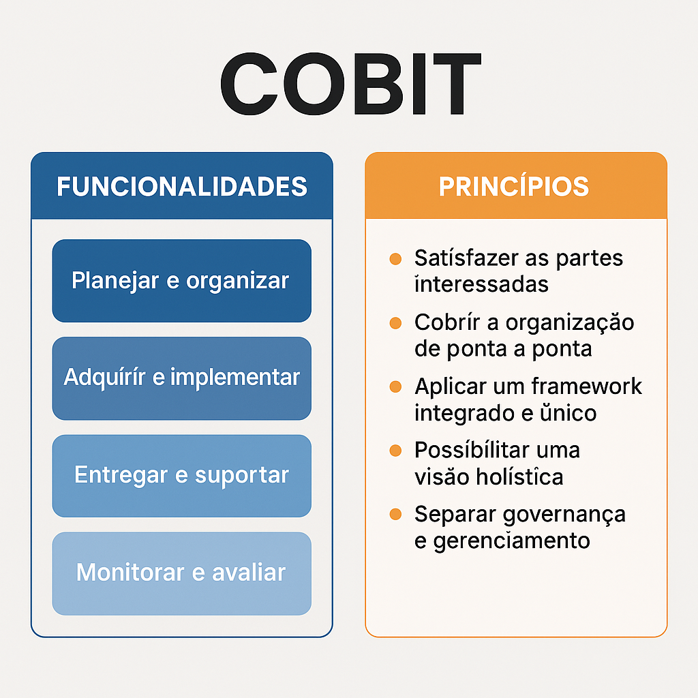

O que é COBIT?
COBIT (Control Objectives for Information and Related Technology) é um framework criado pela ISACA que ajuda organizações a governar e gerenciar a TI de forma eficaz. Ele garante que os serviços de TI estejam alinhados com os objetivos do negócio, trazendo mais segurança, controle e resultados.
Todas as funções de administração das informações da empresa, o controle dos serviços de TI, a tecnologia padronizada entre setores, a segurança das informações, administração de dados do cliente e gestão de TI fazem parte do framework.
Ele foi criado para garantir que a tecnologia da informação esteja alinhada com os objetivos de negócios, ao mesmo tempo que gerencia riscos e melhora a eficiência dos processos.
🧩 Funcionalidades e Benefícios do COBIT
| Funcionalidade | Descrição |
|---|---|
| Governança de TI | Estabelece responsabilidades claras para decisões estratégicas relacionadas à tecnologia. |
| Gestão de Riscos | Ajuda a identificar, avaliar e mitigar riscos associados ao uso da TI. |
| Entrega de Valor | Garante que os investimentos em TI realmente contribuam com resultados para o negócio. |
| Alinhamento Estratégico | Assegura que a TI esteja sincronizada com os objetivos e metas organizacionais. |
| Desempenho e Conformidade | Monitora se a TI está entregando conforme o esperado e em conformidade com normas e leis. |
As 4 Funcionalidades do COBIT (Também chamadas de domínios de processo)
Essas funcionalidades são agrupadas em ciclos de vida da TI e ajudam na gestão completa dos serviços de tecnologia, atualmente estamos na quinta versão do framework, que é formado por quatro funcionalidades, são elas:
1️⃣ Planejar e Organizar (PO) Envolve a definição da estratégia de TI, estrutura organizacional, políticas e processos. O foco é garantir que a TI
esteja alinhada com os objetivos do negócio.
Exemplo: Criar um plano estratégico de TI alinhado ao crescimento da empresa.
2️⃣ Adquirir e Implementar (AI) Trata da aquisição, desenvolvimento ou implementação de soluções de TI.
Inclui também a manutenção e as mudanças necessárias.
Exemplo: Implantar um novo sistema ERP na empresa com base nas melhores práticas.
3️⃣ Entregar e Suportar (DS) Envolve a entrega dos serviços de TI ao usuário final, garantindo disponibilidade,
suporte técnico e segurança da informação.
Exemplo: Garantir que o sistema esteja funcionando corretamente e com suporte ao usuário.
4️⃣ Monitorar e Avaliar (ME) Refere-se à avaliação contínua da performance da TI, conformidade com leis e políticas e identificação de melhorias.
Exemplo: Auditorias periódicas nos sistemas e processos de TI.
Os 5 Princípios do COBIT
1️⃣ Satisfazer as partes interessadas – O principal objetivo da governança de TI é atender às necessidades das partes interessadas, equilibrando benefícios, riscos e recursos.
2️⃣ Cobrir a organização de ponta a ponta – A governança de TI deve estar integrada à governança corporativa e abranger toda a organização, garantindo alinhamento estratégico.
3️⃣ Aplicar um framework integrado e único – O COBIT se conecta com outros frameworks e normas (como ITIL, ISO 27001) para criar um modelo unificado de governança de TI.
4️⃣ Possibilitar uma visão holística – A abordagem deve considerar vários fatores, como processos, estruturas organizacionais, cultura e tecnologia, para garantir governança eficaz.
5️⃣ Separar governança e gerenciamento – A governança define direções estratégicas, enquanto o gerenciamento executa ações para cumprir essas direções, garantindo o alinhamento com os objetivos do negócio.
🧱 Componentes do COBIT
| Componente | Descrição |
|---|---|
| Processos | Conjunto de atividades organizadas para atingir objetivos de governança e gestão. |
| Estruturas Organizacionais | Entidades e papéis que tomam decisões e possuem responsabilidades. |
| Fluxos de Informação | Dados e relatórios usados para tomar decisões estratégicas e operacionais. |
| Cultura, Ética e Comportamento | Valores e atitudes que moldam o comportamento nas atividades de TI. |
| Pessoas, Habilidades e Competências | Capacitações necessárias para executar e apoiar a governança e gestão de TI. |
| Serviços, Infraestrutura e Aplicações | Recursos tecnológicos que suportam os processos e operações da TI. |
| Políticas, Procedimentos e Documentação | Regras formais e instruções para orientar a execução de atividades. |